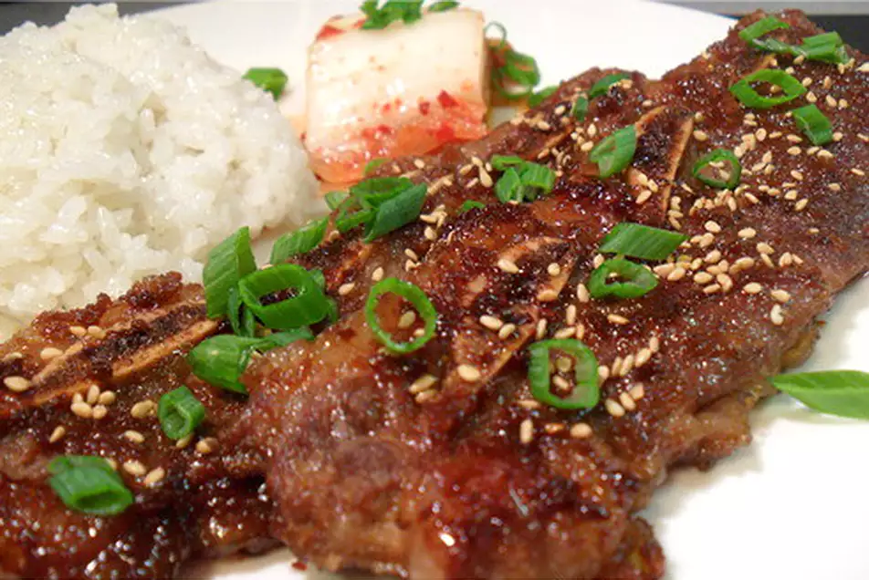

Back to the main page
Kalbi Ribs

Description
On my half-day off, I decided to relax by making my favorite Korean meat dish, kalbi (marinated short ribs). Serve with white rice and kimchi. If serving small children (and wanting to prevent a mess), it's best to cut the meat off the bone and slice into bite-sized pieces. The dark marinade can stain clothes, so be careful.
Notes
- Prep: 20 mins
- cook: 8 mins
- Additional: 9 hrs
- Total: 9hrs 28mins
- Servings: 10
- Yeild: 3 pounds of bone-in ribs
Ingridients
- 3 pounds beef short ribs
- ½ cup soy sauce
- 1 Asian pear, cored and dice
- 2 tablespoons chopped garlic
- 1 tablespoon sesame oil
- 1 tablespoon sesame seeds
- 1 tablespoon ground black pepper
- 1 tablespoon monosodium glutamane
- 1 (2 pound) beef rump roast, sliced into thin strips
- 1 onion, cut into thin strips
Directions
- In a large bowl, mix together soy sauce, pear juice, sugar,
garlic, sesame oil, sesame seeds, black pepper, and monosodium
glutamate; add beef and onions. Stir to coat, cover, and refrigerate
for 1 hour.
- Preheat a grill pan over high heat and brush with oil;
add beef and onions. Cook, turning to brown evenly,
for 3 to 6 minutes, or until done.